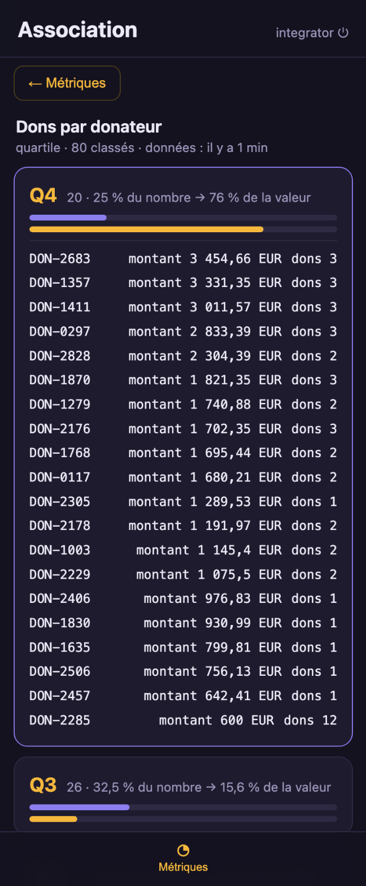

Logiciel de dons legacy: le quart des donateurs qui fait 76 % des dons d'une association
Objectif Savoir quels donateurs appartiennent au quart supérieur par montant donné dans l'année, et quelle part ils portent.
Une association exporte les dons de l'année, une ligne par don. Tout le monde pense que ses ressources tiennent aux nombreux prélèvements mensuels. Personne n'a classé les donateurs par montant sur l'année.
- un quartile par nombre de donateurs
- le nombre de dons à côté du montant
- des codes, aucun nom
don;donateur;date;montant;mode G25-00001;DON-0558;2025-01-01;20,00;espèces G25-00002;DON-0002;2025-01-05;12,00;prélèvement G25-00003;DON-0110;2025-01-05;12,00;prélèvement G25-00004;DON-0115;2025-01-05;25,00;prélèvement G25-00005;DON-0126;2025-01-05;8,00;prélèvement G25-00006;DON-0178;2025-01-05;10,00;prélèvement G25-00007;DON-0202;2025-01-05;20,00;prélèvement G25-00008;DON-0270;2025-01-05;25,00;prélèvement G25-00009;DON-0274;2025-01-05;8,00;prélèvement G25-00010;DON-0339;2025-01-05;40,00;prélèvement G25-00011;DON-0401;2025-01-05;8,00;prélèvement G25-00012;DON-0407;2025-01-05;15,00;prélèvement G25-00013;DON-0454;2025-01-05;10,00;prélèvement G25-00014;DON-0487;2025-01-05;10,00;prélèvement G25-00015;DON-0500;2025-01-05;20,00;prélèvement G25-00016;DON-0710;2025-01-05;10,00;prélèvement G25-00017;DON-0776;2025-01-05;10,00;prélèvement G25-00018;DON-0796;2025-01-05;10,00;prélèvement G25-00019;DON-0812;2025-01-05;15,00;prélèvement
… 588 lignes de plus
manifests/10-dons.yaml
apiVersion: connectors.lumnik.io/v1kind: Connectormetadata: name: scenario-asso-a connector_type: csv-file scopes: [asso-a]spec: transport: kind: sftp host: host.docker.internal port: 2237 user: tresorier path: /exports/dons.csv password_env: SCENARIO_ASSO_A_SFTP # The fingerprint the export server presents, read out of band (ssh-keyscan | ssh-keygen -lf -). host_key_fingerprint: "SHA256:FINGERPRINT_READ_AT_REPLAY" parser: has_header: true delimiter: ";" encoding: UTF-8 after_process: none mapping: cell: - parse-number: { column: montant, decimal-separator: "," } # the software writes 1200,50manifests/20-don.yaml
kind: Entityname: ScenarioAssoDonsAmatch: [don]scopes: [asso-a]sources: - table: t_scenario_asso_a map: don: don donateur: donateur date: date montant: montant mode: modemanifests/30-quartile.yaml
apiVersion: apps.lumnik.io/v1kind: Metricmetadata: name: scenario_asso_donateurs_aspec: scope: asso-a title: Dons par donateur description: Le quartile de chaque donateur par montant donné en 2025, et le nombre de ses dons. source: entity: ScenarioAssoDonsA by: [donateur] # a donor's code: no name reaches the metric measures: montant: { sum: montant, unit: EUR } dons: { count: rows } across: quartile: { quantile: montant, bounds: [25, 50, 75], labels: [Q4, Q3, Q2, Q1] } # by number of donors$ lm apply -f 10-dons.yaml
Applied connector "scenario-asso-d1128" — 1 endpoint
$ lm connector run scenario-asso-d1128
run scheduled: fac24477-191f-456b-96bf-edcc699e99b6
$ lm run get fac24477-191f-456b-96bf-edcc699e99b6 --wait-evaluated
ID CONNECTOR ENDPOINT STATUS IN OUT SKIPPED DEAD-LETTERS STARTED ENDED EVALUATED
fac24477 scenario-asso-d1128 default Completed 607 607 0 0 2026-11-27 23:08 2026-11-27 23:08 yes
$ lm entity apply -f 20-don.yaml
Applied entity "ScenarioAssoDonsD1128" → connector."v_scenarioassodonsd1128"
$ lm metric apply -f 30-quartile.yaml
Applied metric "scenario_asso_donateurs_d1128" (definition version 1)- run
- IN 607 · OUT 607 · cell errors 0
preuves: replay.log, 00-check-quartile.txt, 01-run.json, 05-top-quarter.json, 04-metric.txt · transform v1
$ lm metric get scenario_asso_donateurs_d1128
Dons par donateur
DONATEUR MONTANT DONS QUARTILE QUARTILE_BEFORE QUARTILE_COUNT QUARTILE_COUNT_SHARE QUARTILE_SHARE QUARTILE_POPULATION QUARTILE_UNCLASSIFIED _DISPUTED
DON-0002 144 12 Q2 63.7500000000000000 17 21.2500000000000000 5.4089547944182169 80 0 0
DON-0110 144 12 Q2 63.7500000000000000 17 21.2500000000000000 5.4089547944182169 80 0 0
DON-0115 300 12 Q3 31.2500000000000000 26 32.5000000000000000 15.6282364962884333 80 0 0
DON-0117 1680.21 2 Q4 11.2500000000000000 20 25.0000000000000000 76.0485210451225799 80 0 0
DON-0126 96 12 Q1 82.5000000000000000 17 21.2500000000000000 2.9142876641707699 80 0 0
DON-0133 110 2 Q1 78.7500000000000000 17 21.2500000000000000 2.9142876641707699 80 0 0
DON-0178 120 12 Q2 68.7500000000000000 17 21.2500000000000000 5.4089547944182169 80 0 0
DON-0202 240 12 Q3 35.0000000000000000 26 32.5000000000000000 15.6282364962884333 80 0 0
DON-0270 300 12 Q3 31.2500000000000000 26 32.5000000000000000 15.6282364962884333 80 0 0
DON-0274 96 12 Q1 82.5000000000000000 17 21.2500000000000000 2.9142876641707699 80 0 0
DON-0297 2833.39 3 Q4 3.7500000000000000 20 25.0000000000000000 76.0485210451225799 80 0 0
DON-0339 480 12 Q3 26.2500000000000000 26 32.5000000000000000 15.6282364962884333 80 0 0
DON-0355 150 3 Q2 62.5000000000000000 17 21.2500000000000000 5.4089547944182169 80 0 0
DON-0401 96 12 Q1 82.5000000000000000 17 21.2500000000000000 2.9142876641707699 80 0 0
DON-0407 180 12 Q3 46.2500000000000000 26 32.5000000000000000 15.6282364962884333 80 0 0
DON-0454 120 12 Q2 68.7500000000000000 17 21.2500000000000000 5.4089547944182169 80 0 0
DON-0476 160 3 Q2 60.0000000000000000 17 21.2500000000000000 5.4089547944182169 80 0 0
DON-0487 120 12 Q2 68.7500000000000000 17 21.2500000000000000 5.4089547944182169 80 0 0
DON-0500 240 12 Q3 35.0000000000000000 26 32.5000000000000000 15.6282364962884333 80 0 0
DON-0558 170 4 Q2 57.5000000000000000 17 21.2500000000000000 5.4089547944182169 80 0 0
DON-0710 120 12 Q2 68.7500000000000000 17 21.2500000000000000 5.4089547944182169 80 0 0
DON-0722 40 1 Q1 96.2500000000000000 17 21.2500000000000000 2.9142876641707699 80 0 0
DON-0776 120 12 Q2 68.7500000000000000 17 21.2500000000000000 5.4089547944182169 80 0 0
DON-0796 120 12 Q2 68.7500000000000000 17 21.2500000000000000 5.4089547944182169 80 0 0
DON-0812 180 12 Q3 46.2500000000000000 26 32.5000000000000000 15.6282364962884333 80 0 0
DON-0853 180 12 Q3 46.2500000000000000 26 32.5000000000000000 15.6282364962884333 80 0 0
DON-0867 144 12 Q2 63.7500000000000000 17 21.2500000000000000 5.4089547944182169 80 0 0
DON-0930 568.36 1 Q3 25.0000000000000000 26 32.5000000000000000 15.6282364962884333 80 0 0
DON-0934 180 12 Q3 46.2500000000000000 26 32.5000000000000000 15.6282364962884333 80 0 0
DON-0951 240 12 Q3 35.0000000000000000 26 32.5000000000000000 15.6282364962884333 80 0 0
DON-0998 240 12 Q3 35.0000000000000000 26 32.5000000000000000 15.6282364962884333 80 0 0
DON-1003 1145.40 2 Q4 15.0000000000000000 20 25.0000000000000000 76.0485210451225799 80 0 0
DON-1138 100 2 Q1 81.2500000000000000 17 21.2500000000000000 2.9142876641707699 80 0 0
DON-1279 1740.88 2 Q4 7.5000000000000000 20 25.0000000000000000 76.0485210451225799 80 0 0
DON-1328 160 3 Q2 60.0000000000000000 17 21.2500000000000000 5.4089547944182169 80 0 0
DON-1357 3331.35 3 Q4 1.2500000000000000 20 25.0000000000000000 76.0485210451225799 80 0 0
DON-1411 3011.57 3 Q4 2.5000000000000000 20 25.0000000000000000 76.0485210451225799 80 0 0
DON-1452 360 12 Q3 27.5000000000000000 26 32.5000000000000000 15.6282364962884333 80 0 0
DON-1508 70 2 Q1 88.7500000000000000 17 21.2500000000000000 2.9142876641707699 80 0 0
DON-1521 180 12 Q3 46.2500000000000000 26 32.5000000000000000 15.6282364962884333 80 0 0
DON-1539 180 12 Q3 46.2500000000000000 26 32.5000000000000000 15.6282364962884333 80 0 0
DON-1568 360 12 Q3 27.5000000000000000 26 32.5000000000000000 15.6282364962884333 80 0 0
DON-1629 240 12 Q3 35.0000000000000000 26 32.5000000000000000 15.6282364962884333 80 0 0
DON-1635 799.81 1 Q4 20.0000000000000000 20 25.0000000000000000 76.0485210451225799 80 0 0
DON-1642 60 12 Q1 90.0000000000000000 17 21.2500000000000000 2.9142876641707699 80 0 0
DON-1686 180 12 Q3 46.2500000000000000 26 32.5000000000000000 15.6282364962884333 80 0 0
DON-1768 1695.44 2 Q4 10.0000000000000000 20 25.0000000000000000 76.0485210451225799 80 0 0
DON-1814 90 3 Q1 87.5000000000000000 17 21.2500000000000000 2.9142876641707699 80 0 0
DON-1830 930.99 1 Q4 18.7500000000000000 20 25.0000000000000000 76.0485210451225799 80 0 0
DON-1870 1821.35 3 Q4 6.2500000000000000 20 25.0000000000000000 76.0485210451225799 80 0 0
DON-1886 300 12 Q3 31.2500000000000000 26 32.5000000000000000 15.6282364962884333 80 0 0
DON-1887 60 1 Q1 90.0000000000000000 17 21.2500000000000000 2.9142876641707699 80 0 0
DON-1957 96 12 Q1 82.5000000000000000 17 21.2500000000000000 2.9142876641707699 80 0 0
DON-2090 60 12 Q1 90.0000000000000000 17 21.2500000000000000 2.9142876641707699 80 0 0
DON-2129 60 12 Q1 90.0000000000000000 17 21.2500000000000000 2.9142876641707699 80 0 0
DON-2161 170 4 Q2 57.5000000000000000 17 21.2500000000000000 5.4089547944182169 80 0 0
DON-2168 120 12 Q2 68.7500000000000000 17 21.2500000000000000 5.4089547944182169 80 0 0
DON-2176 1702.35 3 Q4 8.7500000000000000 20 25.0000000000000000 76.0485210451225799 80 0 0
DON-2178 1191.97 2 Q4 13.7500000000000000 20 25.0000000000000000 76.0485210451225799 80 0 0
DON-2229 1075.50 2 Q4 16.2500000000000000 20 25.0000000000000000 76.0485210451225799 80 0 0
DON-2237 144 12 Q2 63.7500000000000000 17 21.2500000000000000 5.4089547944182169 80 0 0
DON-2264 20 1 Q1 98.7500000000000000 17 21.2500000000000000 2.9142876641707699 80 0 0
DON-2269 360 12 Q3 27.5000000000000000 26 32.5000000000000000 15.6282364962884333 80 0 0
DON-2285 600 12 Q4 23.7500000000000000 20 25.0000000000000000 76.0485210451225799 80 0 0
DON-2305 1289.53 1 Q4 12.5000000000000000 20 25.0000000000000000 76.0485210451225799 80 0 0
DON-2334 240 12 Q3 35.0000000000000000 26 32.5000000000000000 15.6282364962884333 80 0 0
DON-2365 180 4 Q3 46.2500000000000000 26 32.5000000000000000 15.6282364962884333 80 0 0
DON-2402 210 4 Q3 45.0000000000000000 26 32.5000000000000000 15.6282364962884333 80 0 0
DON-2406 976.83 1 Q4 17.5000000000000000 20 25.0000000000000000 76.0485210451225799 80 0 0
DON-2440 120 12 Q2 68.7500000000000000 17 21.2500000000000000 5.4089547944182169 80 0 0
DON-2457 642.41 1 Q4 22.5000000000000000 20 25.0000000000000000 76.0485210451225799 80 0 0
DON-2482 40 1 Q1 96.2500000000000000 17 21.2500000000000000 2.9142876641707699 80 0 0
DON-2506 756.13 1 Q4 21.2500000000000000 20 25.0000000000000000 76.0485210451225799 80 0 0
DON-2509 240 12 Q3 35.0000000000000000 26 32.5000000000000000 15.6282364962884333 80 0 0
DON-2617 240 12 Q3 35.0000000000000000 26 32.5000000000000000 15.6282364962884333 80 0 0
DON-2646 60 12 Q1 90.0000000000000000 17 21.2500000000000000 2.9142876641707699 80 0 0
DON-2683 3454.66 3 Q4 0 20 25.0000000000000000 76.0485210451225799 80 0 0
DON-2828 2304.39 2 Q4 5.0000000000000000 20 25.0000000000000000 76.0485210451225799 80 0 0
DON-2901 180 12 Q3 46.2500000000000000 26 32.5000000000000000 15.6282364962884333 80 0 0
DON-2989 110 2 Q1 78.7500000000000000 17 21.2500000000000000 2.9142876641707699 80 0 0
montant: EUR
quartile_before: %
quartile_count_share: %
quartile_share: %
montant = sum(montant), by donateur
dons = count(rows), by donateur
quartile = quantile(montant, bounds [25, 50, 75], labels [Q4, Q3, Q2, Q1]) over every group, prior headcount, null unclassified
data as of: 2026-11-27T22:08:48.311306Z (last completed run)- Q4
- 20 donors · 76.05 % of the amount
- Q4 gifts
- 50 of 607
- DON-2683
- 3454.66 EUR · 3 gifts
- DON-1357
- 3331.35 EUR · 3 gifts
- DON-1411
- 3011.57 EUR · 3 gifts
- DON-0297
- 2833.39 EUR · 3 gifts
- DON-2828
- 2304.39 EUR · 2 gifts
- DON-1870
- 1821.35 EUR · 3 gifts
- DON-1279
- 1740.88 EUR · 2 gifts
- DON-2176
- 1702.35 EUR · 3 gifts
- DON-1768
- 1695.44 EUR · 2 gifts
- DON-0117
- 1680.21 EUR · 2 gifts
- DON-2305
- 1289.53 EUR · 1 gifts
- DON-2178
- 1191.97 EUR · 2 gifts
- DON-1003
- 1145.4 EUR · 2 gifts
- DON-2229
- 1075.5 EUR · 2 gifts
- DON-2406
- 976.83 EUR · 1 gifts
- DON-1830
- 930.99 EUR · 1 gifts
- DON-1635
- 799.81 EUR · 1 gifts
- DON-2506
- 756.13 EUR · 1 gifts
- DON-2457
- 642.41 EUR · 1 gifts
- DON-2285
- 600 EUR · 12 gifts
- check_quartile.py
- same 20 donors, same share
preuves: replay.log, 00-check-quartile.txt, 01-run.json, 05-top-quarter.json, 04-metric.txt · transform v1

Limites
- Pas encore de mouvement: les donateurs entrés ou sortis de Q4 depuis l'an dernier attendent l'historique des métriques. Une année est un total.
- Pas un score de fidélité: le classement se fait sur le montant seul, le nombre de dons est montré à côté, pas pondéré.
- Les montants tels qu'enregistrés: lumnik ne les rapproche pas des reçus fiscaux.
- Aucun nom: la métrique contient des codes, qui est derrière un code reste dans le logiciel de dons.
- 80 codes de donateurs et 607 dons synthétiques.
Ce scénario tourne sur lumnik Open, gratuit et open source.
Essayer lumnik Open →